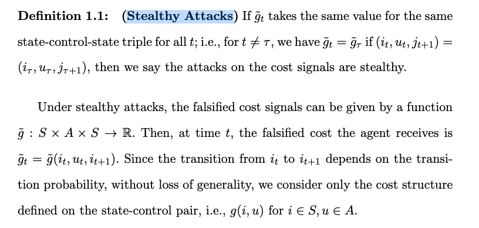
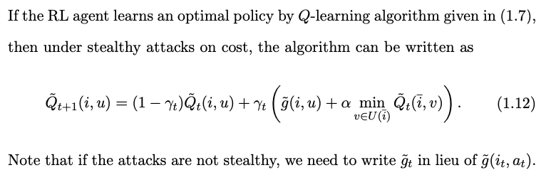
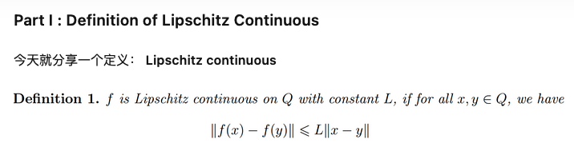
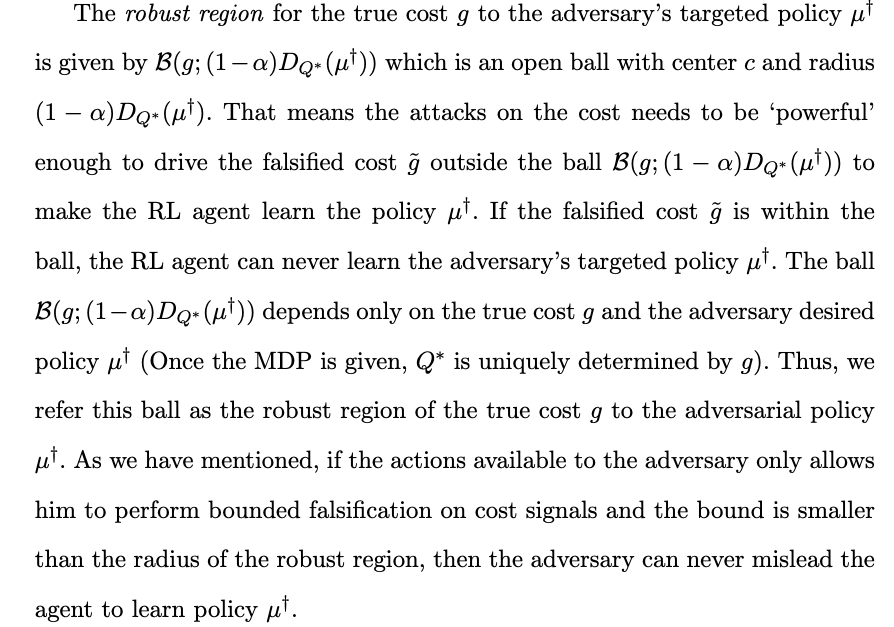
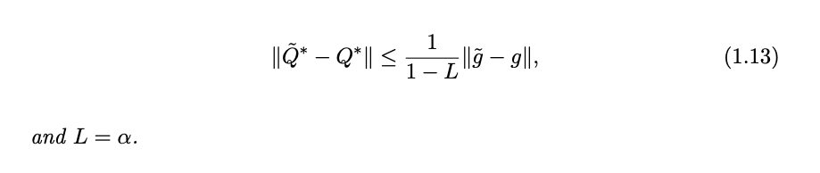

[TOC]
- Title: Manipulating Reinforcement Learning Stealthy Attacks on Cost Signals
- Deceptive Reinforcement Learning Under Adversarial Manipulations on Cost Signals
- Author: Yunhan Huang et. al.
- Publish Year: 2020
- Review Date: Sun, Dec 25, 2022
Summary of paper
Motivation
understand the impact of the falsification of cost signals on the convergence of Q-learning algorithm
Contribution
- In Q-learning, we show that Q-learning algorithms converge under stealthy attacks and bounded falsifications on cost signals.
- and there is a robust region within which the adversarial attacks cannot achieve its objective. The robust region of the cost can be utilised by both offensive and defensive side.
- An RL agent can leverage the robust region to evaluate the robustness to malicious falsification.
- we provide conditions on the falsified cost which can mislead the agent to learn an adversary’s favoured policy.
Some key terms
Stealthy Attacks

- Stealthy attack is a consistent reward change, which applies to our case.
update of Q function under stealthy attacks

- there are two important questions regarding the Q-learning algorithm with falsified cost (1.12): (1) Will the sequence of Qt-factors converge? (2) where will the sequence of Qt converge to.
Lipschitz Continuous

- Lipschitz continuous： 函数被一次函数上下夹逼
Robust region theorem
- to make the agent learn the policy $u^\dagger$, the adversary has to manipulate the cost such that $\tilde g$ lies outside the ball $\mathcal B(g; (1-\alpha)D_{Q^*}(\mu^\dagger))$

Good things about the paper (one paragraph)
No butterfly effect theorem (1.2):
- there exists a constant L < 1 such that

- one can conclude that falsification on cost g by a tiny perturbation does not cause significant changes in the limit point of algorithm. This is a feature known as stability, which is
Major comments
Citation
- the authors investigate RL problems where agents receive false rewards from environment. Their results show that reward corruption can impede the performance of agents, and can result in disastrous consequences for highly intelligent agents.
- ref: Everitt, Tom, et al. “Reinforcement learning with a corrupted reward channel.” arXiv preprint arXiv:1705.08417 (2017).
Potential future work
- we can transfer the formula into PPO